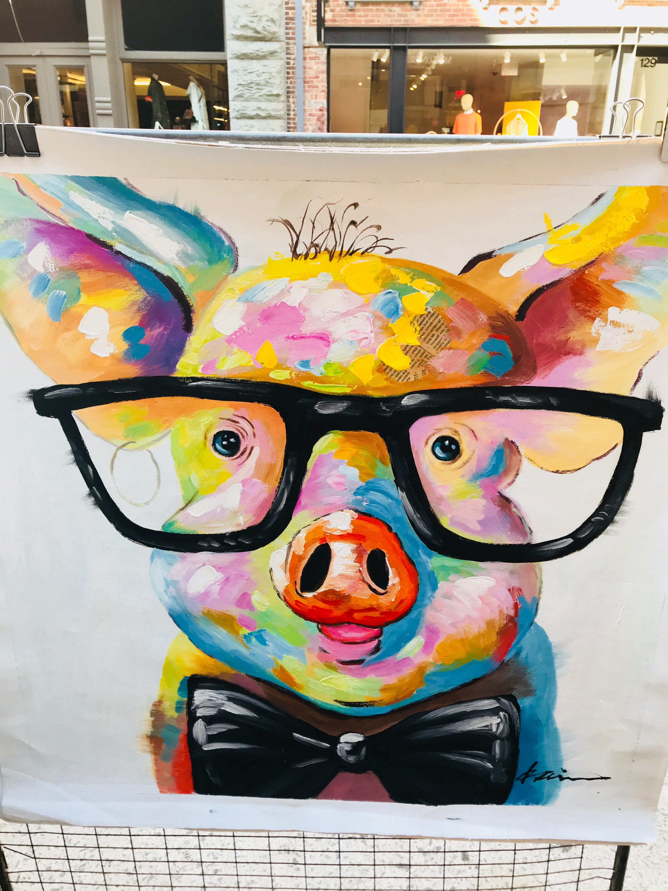
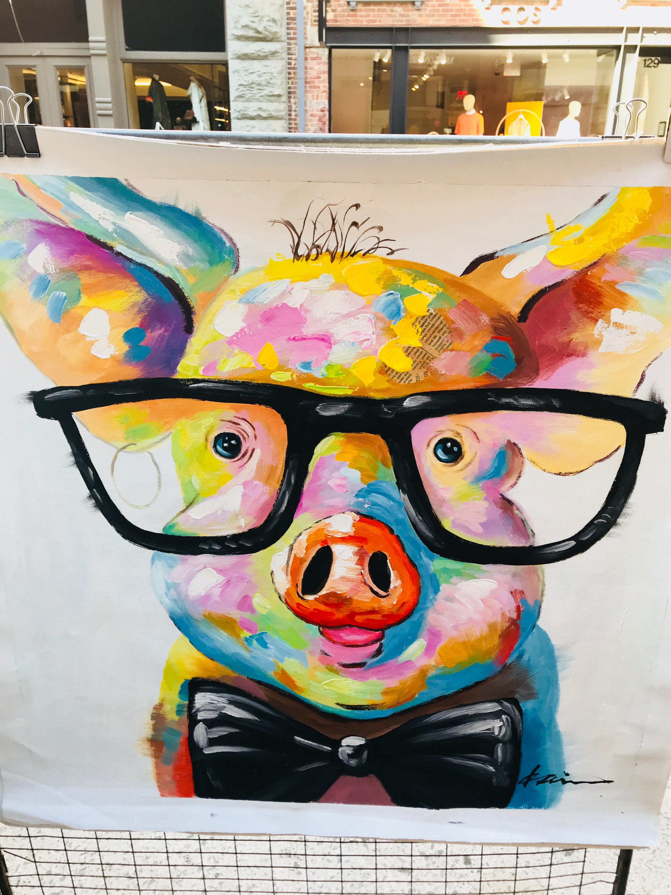

Colorado
Colorado is such an amazing state. Not only does my best friend live there, but it is so beautiful, the people are friedly, there's sunshine, and everyone is relaxed. Whether I am in Colorado during the winter or summer season, I always have a great time. Though I prefer the summer because the hiking is exquisite, I was able to begin learning how to ski in the winter. I will have to go back and continue learning beacsue I need a lot of practice. I always love excuses to visit my friends!


Florida
Florida is the most relaxing place. During the holidays, my family and I generally go to Florida to escape the cold Michigan weather. The beaches, sun, and warmth always makes my time there enjoyable. There's nothing like reading next to the beach or pool on a hot day. I always like doing the water activities such as parasailing, banana boating, fishing, and more. Being on vacation is such a nice break from reality.


California
In the future, California is another place I could see myself living in. It is the perfect combination of warmth, but not too warm, busy, but not too overwhelming, and earthy, but not too earthy. This was another girls trip I took with my mom, and we had the best time. We ate good food, hiked a lot, saw pretty houses, shopped, and explored. I loved the atmosphere of positive energy and happiness.


New York City
New York City is such a happening place. I have traveled here countless times as my cousins used to live here and now both of my older brothers live here. I have always loved the city. There are always things to do and see and new expereinces to be had. The shopping, broadway shows, and, of course, the delicious food, makes New York one of the best cities. I definately see myself moving here after college for a few years.


 
